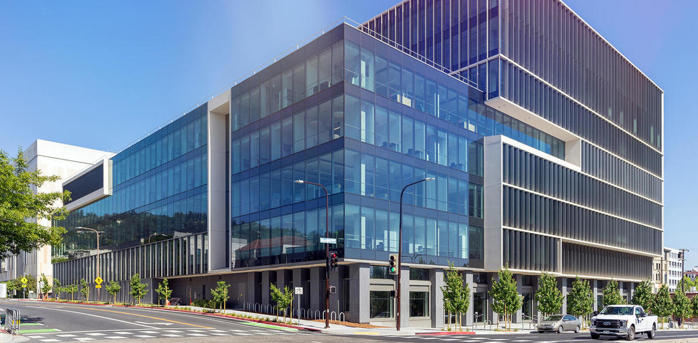

Recent Posts

Summer Internship Program
July 13 - August 9, 2019
Advanced high-school students are given the opportunity to be involved with cutting-edge research in vision science.

We've moved!
August 20, 2018
Find us at our new home in Berkeley Way West, right in the heart of downtown Berkeley.

New Developments in Ensemble Vision
February 5, 2018
Mauro Manassi and David Whitney explore the effects of visual crowding.